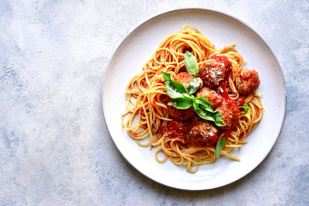

Spaghetti

Description
To make a classic spaghetti dish, start by boiling a large pot of salted water.
Once it reaches a rolling boil, add the spaghetti noodles and cook them according
to the package instructions until they are al dente. While the pasta is cooking,
heat olive oil in a separate pan over medium heat. Add finely chopped onions and
garlic, sautéing until they're soft and fragrant. Then, stir in ground beef or
Italian sausage (optional), cooking until browned. Once the meat is cooked, pour
in crushed tomatoes or tomato sauce, season with salt, pepper, and Italian herbs
like basil and oregano, and let the sauce simmer for 15–20 minutes to develop flavor.
When the spaghetti is ready, drain it and combine it with the sauce, tossing everything
together until the noodles are well coated. For a richer taste, you can add a splash
of pasta water to loosen the sauce or stir in a bit of grated Parmesan cheese. Garnish
with fresh basil or parsley before serving. This simple yet flavorful dish is a staple
of Italian cuisine and can be easily adapted to suit vegetarian or spicy preferences by
swapping ingredients or adding red pepper flakes. Serve hot with garlic bread and a side
salad for a complete meal.
Ingredients
- 400g (14 oz) spaghetti noodles
- 2 tablespoons olive oil
- 1 medium onion, finely chopped
- 2–3 garlic cloves, minced
- 250g (9 oz) ground beef or Italian sausage (optional)
- 1 can (400g/14 oz) crushed tomatoes or tomato sauce
- 1 teaspoon dried oregano
- 1 teaspoon dried basil
- Salt and pepper to taste
- ¼ cup grated Parmesan cheese (optional)
- Fresh basil or parsley for garnish (optional)
- Water and salt for boiling pasta
Steps
- Fill a large pot with water, add a generous pinch of salt, and bring it to a rolling boil.
- Add 400g (14 oz) spaghetti noodles, stirring occasionally to prevent sticking.
- Cook according to the package instructions until al dente, usually 8–10 minutes.
- Reserve about ½ cup of pasta water, then drain the spaghetti and set it aside.
- In a large skillet, heat 2 tablespoons of olive oil over medium heat.
- Add 1 finely chopped onion and sauté for 3–4 minutes until soft and translucent.
- Stir in 2–3 minced garlic cloves and cook for another 30 seconds until fragrant.
- Add 250g ground beef or Italian sausage (if using), and cook for 5–7 minutes until browned.
- Drain excess fat from the meat, if necessary.
- Pour in 1 can (400g/14 oz) of crushed tomatoes or tomato sauce.
- Stir in 1 teaspoon each of dried oregano and basil, plus salt and pepper to taste.
- Bring the sauce to a gentle simmer and cook uncovered for 15–20 minutes, stirring occasionally.
- If the sauce is too thick, add a splash of the reserved pasta water to loosen it.
- Add the cooked spaghetti to the sauce and toss until evenly coated.
- Stir in ¼ cup of grated Parmesan cheese (optional) for extra richness.
- Serve the spaghetti hot, garnished with fresh basil or parsley and extra Parmesan if desired.
Home